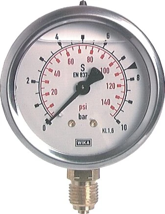

Một câu hỏi thường gặp khi chọn đồng hồ áp suất WIKA: nên dùng loại đổ dầu glycerin (glycerin-filled) hay loại khô (dry)? Nhìn bề ngoài hai loại gần như giống hệt, nhưng chọn sai có thể khiến đồng hồ khô rung kim đến mức không đọc nổi và hỏng chỉ sau vài tháng, hoặc ngược lại khiến bạn trả thêm tiền cho tính năng chống rung mà điểm lắp không cần. Câu trả lời phụ thuộc chủ yếu vào rung động và xung áp tại điểm lắp. Fast Group Engineering là đại lý cung cấp hàng chính hãng WIKA (Germany) tại Việt Nam.

Gợi ý chọn nhanh
- Cần đọc áp suất tại chỗ trên máy, bơm, đường ống.
- Cần chọn đường kính mặt, dải đo, ren và vật liệu.
- Cần thay thế đồng hồ WIKA theo nameplate cũ.
- Part number hoặc ảnh nameplate.
- Dải đo, đường kính mặt, kiểu chân và ren kết nối.
- Môi chất, rung động, nhiệt độ và yêu cầu CO/CQ.
- Danh mục đồng hồ áp suất WIKA.
- Bài chọn đường kính mặt và ren.
- Bài cấp chính xác EN 837/Class.
Tóm tắt nhanh
- Glycerin-filled: đổ dầu trong vỏ, giảm rung kim và xung áp, kéo dài tuổi thọ.
- Đồng hồ khô: giá tốt hơn, phù hợp môi trường ổn định, ít rung.
- Có rung/bơm/máy nén → chọn glycerin. Đo tĩnh, ổn định → khô là đủ.

Đồng hồ glycerin hoạt động ra sao?
Vỏ đồng hồ được đổ đầy dầu glycerin (hoặc silicone). Chất lỏng này giảm chấn cho cơ cấu kim và Bourdon tube, hấp thụ rung động và xung áp. Kết quả: kim đọc ổn định, không rung, các chi tiết ít mài mòn hơn. Ngoài giảm chấn, lớp dầu còn bôi trơn cơ cấu răng và bịt kín bên trong, giúp ngăn hơi ẩm ngưng tụ trên mặt kính — một lợi ích quan trọng ở môi trường nóng ẩm hoặc thay đổi nhiệt độ liên tục như ngoài trời.
So sánh trực tiếp
| Tiêu chí | Glycerin-filled | Đồng hồ khô (dry) |
|---|---|---|
| Chống rung | Rất tốt | Kém |
| Chống xung áp | Tốt | Kém |
| Độ ổn định kim | Cao | Trung bình |
| Tuổi thọ trong rung động | Cao | Thấp hơn |
| Giá | Cao hơn | Thấp hơn |
| Nhiệt độ rất thấp | Dầu có thể đặc lại | Không ảnh hưởng |
| Đọc ban đầu | Có thể hơi mờ do dầu | Rõ ngay |
Glycerin hay silicone? Chọn dầu điền theo nhiệt độ
WIKA cung cấp cả hai loại dầu điền. Glycerin là lựa chọn phổ thông, kinh tế, phù hợp phần lớn ứng dụng công nghiệp trong dải nhiệt thường. Silicone giữ độ nhớt ổn định hơn ở nhiệt độ thấp, thích hợp cho môi trường lạnh hoặc ngoài trời vùng lạnh, nơi glycerin có thể đặc lại làm kim phản hồi chậm. Nếu điểm lắp có biên độ nhiệt rộng, hãy nêu rõ dải nhiệt để chọn đúng loại dầu — đây là chi tiết nhỏ nhưng ảnh hưởng trực tiếp tới khả năng đọc đúng.
Khi nào chọn Glycerin?
- Lắp gần bơm, máy nén, van đóng nhanh (xung áp).
- Có rung động cơ khí (máy móc, phương tiện).
- Cần kim đọc ổn định cho vận hành/giám sát.
- Môi trường thủy lực, khí nén công nghiệp.
Khi nào chọn đồng hồ khô?
- Áp suất tĩnh, ổn định, không rung.
- Ưu tiên chi phí.
- Nhiệt độ môi trường rất thấp (tránh dầu đặc) — hoặc chọn dầu chịu lạnh.
- Ứng dụng HVAC, cấp nước, chỉ thị đơn giản.
- Môi chất là oxy — tuyệt đối không dùng dầu điền gốc dầu; cần bản chuyên dụng cho oxy.
Ví dụ thực tế: cùng một điểm đo, hai kết quả
Trên đầu đẩy một bơm ly tâm, đồng hồ khô thường rung kim biên độ lớn, người vận hành không đọc được giá trị và kim nhanh mòn trục. Thay bằng bản glycerin 100 mm, kim gần như đứng yên, đọc rõ ràng, và tuổi thọ kéo dài nhiều lần. Ngược lại, trên đường nước sinh hoạt áp tĩnh trong nhà máy, một đồng hồ khô 63 mm hoạt động ổn định hàng năm trời mà không cần đến dầu điền — thêm glycerin ở đây chỉ làm tăng chi phí không cần thiết.
Giải pháp thay thế: đồng hồ khô + snubber
Nếu cần chống xung áp nhưng vẫn muốn đồng hồ khô, có thể lắp thêm snubber (bộ giảm xung) hoặc đồng hồ có bộ giảm chấn. Tuy nhiên với rung động mạnh, glycerin vẫn tối ưu hơn vì nó xử lý được cả rung cơ khí lẫn xung áp, trong khi snubber chỉ giảm xung áp thủy lực.
Cách chọn (Checklist)
- [ ] Có rung/xung áp không? → Có: glycerin.
- [ ] Dải đo & Ø mặt: 63/100/160 mm.
- [ ] Ren kết nối: G¼, G½.
- [ ] Vật liệu wetted: inox 316 nếu ăn mòn.
- [ ] Nhiệt độ môi trường (chọn loại dầu phù hợp nếu quá lạnh).
- [ ] Môi chất oxy/đặc biệt? → cần bản chuyên dụng.
Sai lầm thường gặp
- Dùng đồng hồ khô ở nơi rung mạnh: kim rung không đọc được, cơ cấu mau hỏng.
- Tự khoan/đổ dầu vào đồng hồ khô: làm mất kín và sai cân bằng áp; luôn mua đúng bản glycerin.
- Quên mở nút thông hơi (vent): nhiều đồng hồ glycerin có nút vent cần chuyển sang vị trí mở khi vận hành để cân bằng áp suất trong vỏ, tránh lệch kim "zero".
- Dùng dầu điền cho môi chất oxy: nguy cơ cháy nổ; oxy cần bản riêng, sạch dầu mỡ.
FAQ
Đồng hồ glycerin đắt hơn nhiều không?
Chênh không lớn so với lợi ích tuổi thọ khi có rung động; thường hoàn vốn nhanh nhờ giảm hỏng hóc.
Dầu trong đồng hồ có bị hao không?
Vỏ kín; một số model có nút thông hơi cần mở khi vận hành theo hướng dẫn. Mực dầu hao nhẹ theo thời gian là bình thường, miễn còn ngập cơ cấu.
Có thể chuyển đồng hồ khô thành glycerin không?
Không nên tự đổ dầu; chọn đúng model glycerin từ đầu để đảm bảo kín và cân bằng áp.
Kim đứng yên do glycerin có che mất rung áp thật không?
Glycerin giảm rung do dao động nhanh; nếu áp thực sự dao động chậm, kim vẫn phản ánh. Khi cần thấy cả biến động nhanh, dùng transmitter ghi tín hiệu song song.
Chọn đường kính mặt phù hợp cho bản glycerin
Đồng hồ glycerin thường đi cùng vị trí lắp có rung, nên đường kính mặt cũng nên chọn để dễ đọc từ xa: 63 mm cho tủ và vị trí gần tầm mắt, 100 mm là cỡ phổ thông cân bằng giữa độ rõ và không gian, 160 mm cho vị trí đọc từ xa hoặc yêu cầu độ chính xác cao hơn. Với bản đổ dầu, mặt lớn còn giúp lớp dầu tản nhiệt tốt hơn khi môi chất nóng. Kết hợp đúng đường kính, loại dầu điền và cấp chính xác sẽ cho một điểm đo vừa bền vừa dễ vận hành.
Cần tư vấn chọn hoặc báo giá?
Gửi điều kiện lắp (rung/xung áp), dải đo, Ø, ren để nhận báo giá trong 24h.
- Email: minhduc@fastgroup.vn · Zalo: (+84) 938 888 958
Fast Group Engineering – đại lý cung cấp hàng chính hãng WIKA (Germany) tại Việt Nam.
Bài liên quan: [Đồng hồ áp suất WIKA là gì] · [Snubber giảm xung áp] · [Chọn Ø mặt & ren] · [Safety pattern gauge]